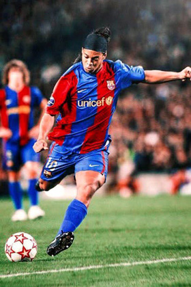
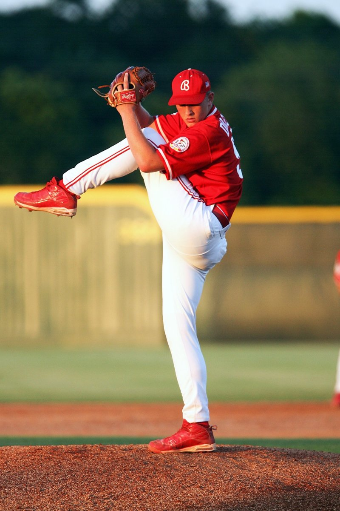
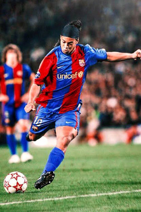
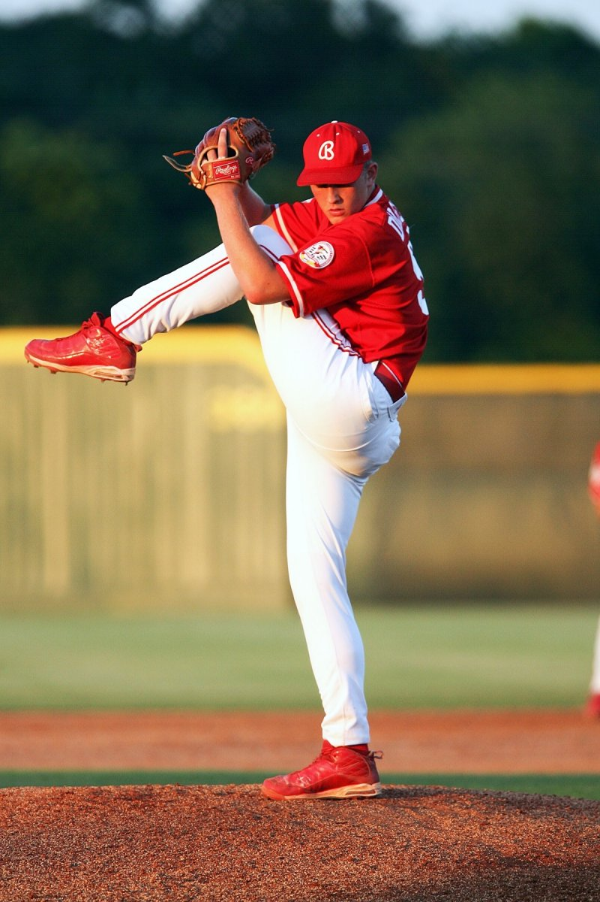
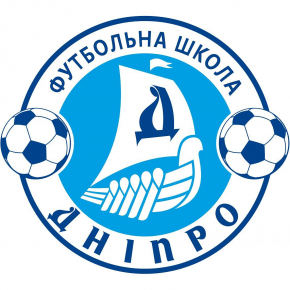
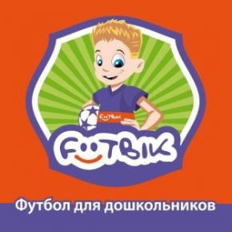
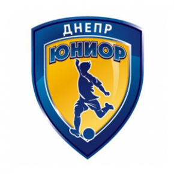
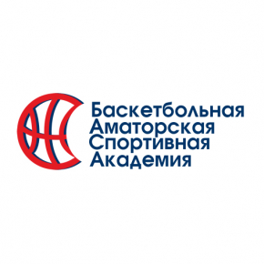
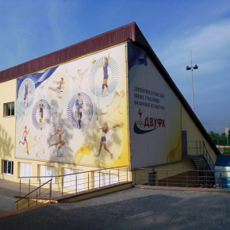
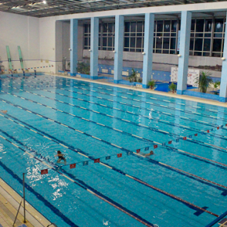

Футбол
Футбольна школа Дніпро
Проводится набор детей (2007, 2008, 2009, 2010, 2011, 2012 г.р.) на занятие по футболу. Игра в футбол проходит очень активно и, на самом деле, дает организму сильную физическую нагрузку. Она включает разнообразные повороты корпуса, рывки, выпады, бег, сильные удары ногами — и все это происходит очень интенсивно, в быстром темпе
Футбольный клуб для дошкольников Footbik
Голландский футбольный центр раннего развития «Футбик». Наша система обучения футболу малышей построена по европейской методике подготовки будущих футболистов TOTAL SOCCER METHOD (Нидерланды). А главный тренер клуба – Марк Гус инт Вельд – адаптировал голландскую методику для обучения футболу детей младше 7 лет. Футбольный клуб для дошкольников «Футбик» — лучший выбор для гармоничного развития ребенка!
Футбольная школа Юниор
Все занятия в нашей частной школе проводятся в игровой форме весело и интересно. Согласно возрастной категории и уровню подготовки дети объединены в небольшие группы и по этому, на одного тренера приходится не более 8 учеников. Такой адресный подход и методики работы принятые в Германии и Испании способствуют достижению цели нашей школы – гармоничному социальному и физическому развитию ребенка!
Баскетбол
Баскетбольная Аматорская Спортивная Академия
Баскетбольная Аматорская Спортивная Академия (БАСА) неприбыльная общественная организация. Уставной целью и основной задачей Академии, является физическое и культурно-воспитательное развитие детей и подростков через занятия баскетболом, который является наиболее развивающим командным видом спорта. Занятия в Академии проводят опытные тренеры-педагоги, воспитавшие не одно поколение высококлассных баскетболистов.
ДВУФК
Днепропетровское высшее училище физической культуры начало свою деятельность в 1983 году. Основная школа обеспечивает ученикам систематические знания по основам наук, необходимые и достаточные для продолжения общего среднего образования, формирует навыки самообучения и самовоспитания. Лицам, которые закончили основную школу, выдается свидетельство о базовом среднем образовании.
Волейбол
ДВУФК
Днепропетровское высшее училище физической культуры начало свою деятельность в 1983 году. Основная школа обеспечивает ученикам систематические знания по основам наук, необходимые и достаточные для продолжения общего среднего образования, формирует навыки самообучения и самовоспитания. Лицам, которые закончили основную школу, выдается свидетельство о базовом среднем образовании.
Тенис
Теннисный клуб Мегарон
Большой теннисный клуб "Мегарон" - это:
- 5 закрытых теннисных кортов с покрытием "hard opticourt"
- услуги тренера по теннису
- специализированный магазин одежды и спорт инвентаря
- массаж
Плавание
Бассейн Метеор
Бассейн олимпийского стандарта 50 м *25 м (10 дорожек), четыре бассейна с современной системой очистки воды для обучения детей плаванию, 2 сауны, трибуны на 800 мест, тренажерный и спортивные залы, просторные и комфортные раздевалки и душевые; спортивный магазин, зона отдыха с уютным кафе.